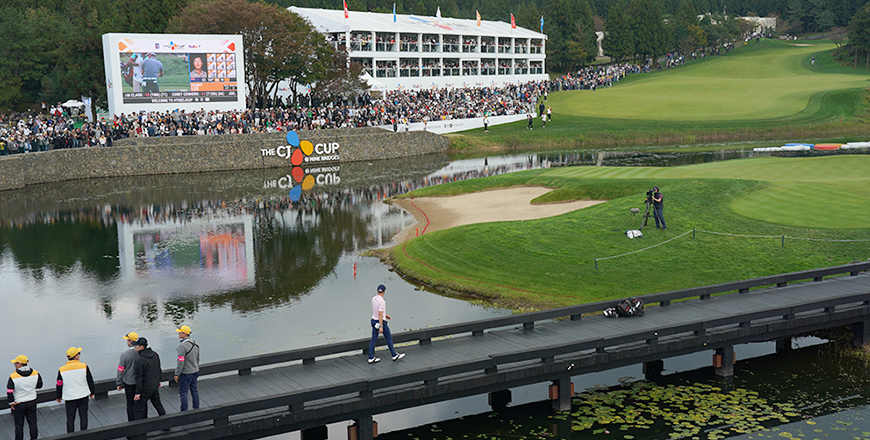

기획취재콘텐츠
- Home
- 제주라이프
- 기획취재콘텐츠
吸引国内外游客的济州岛休闲产业 第二篇새로운 글


高尔夫未来之星梦想中的舞台，激活地区经济的新篇章——CJ杯
由CJ集团主办的CJ杯是首次也是唯一一次在韩国举行的PGA正规巡回赛。巡回赛主题为“Bridge to Realization”，是帮助韩国男子高尔夫领域的未来之星们实现挑战世界舞台梦想的平台，同时也是为激活地区经济做出贡献的国际活动。
- 首次获得PGA新人王的亚洲选手任成宰 正在2019 CJ杯上开球 ⓒCJ集团 -
从2017年开始，计划举办10年的CJ杯截止到去年，在济州岛共举行了3次比赛。举办成果非常显著。过去3年间，分别有3.5万、4.1万、4.6万多名的观众来到比赛现场，使济州岛间接取得了巨大的经济收益。据CJ集团提供，由专业调查公司调查的结果显示，2018年在现场观看比赛的观众每人每天平均约支出了17万韩元，由CJ杯直接带来的经济效益达到了约249亿韩元。此外，向全世界226个国家的10亿户家庭，用23种语言进行转播，通过媒体曝光创下了近1,840亿韩元的成绩，获得了巨大的经济成就 。
CJ集团还与济州岛旅游发展局、PGA巡回赛的主要选手一起以济州岛特产和独特的自然环境为背景制作了宣传影像，为向全世界宣传济州岛做出了贡献。在2017年首届巡回赛上还邀请亚当•斯科特享受了冲浪乐趣、邀请简森•戴伊品尝了海女刚捕捞的海鲜和济州岛特产烤黑猪肉。2018年又邀请丹尼•威利特登上山峰，尽情观赏了济州岛独有的美丽风景。布鲁克斯•科普卡还将在济州岛前海钓到的51厘米长的黄鲷发布在了全球媒体和社交网络平台，得到了许多高尔夫球迷的热烈讨论。
去年，分别代表美国和韩国的菲尔•迈克尔森和崔京周选手也向全世界公布了体验济州岛的绿茶田与绿茶及骑马的照片。受邀参加CJ杯的著名高尔夫选手们热情分享了在济州岛体验到的快乐，这无疑起到了向全世界宣传济州岛魅力的桥梁作用。
- (左) 2019年在济州岛体验茶道、享受韩国文化的菲尔•迈克尔森 ⓒCJ集团,
(右) 与体验骑马的崔京周选手 ⓒCJ集团 -
(右) 与体验骑马的崔京周选手 ⓒCJ集团 -
与济州岛的环境完美结合的高尔夫球场——九桥俱乐部
举办大赛的九桥俱乐部被评价为“将自然与高尔夫完美进行了结合”。由于原封不动地保留了济州岛的自然特点，且具备了高尔夫选手可以根据不同水平进行不同攻略的球场，因此享有盛名。就连PGA巡回赛的选手也纷纷惊叹济州岛特有的涡流风和视错觉现象“汉拿山曲线（break）” ,加上优秀的自然景观，成为了向全世界宣传济州岛的核心魅力点。
九桥俱乐部在世界著名高尔夫杂志《高尔夫文摘》每两年公布一次的“全球高尔夫球场”排名中，在2018年和2020年分别排在了第23位和第18位，是与其他顶尖高尔夫球场并驾齐驱的高水准高尔夫球场。不仅如此，还连续6次占据了韩国最佳球区第一的位置（以2019年为准），并于2017年进入韩国高尔夫球场名誉殿堂等，在韩国乃至全世界获得了认可。在18年前曾举办了韩国首届LPGA巡回赛，以及作为全世界顶尖高尔夫俱乐部之间的对抗赛的世界俱乐部锦标赛等国外的顶级赛事，资历非常丰富。
※ 2) : 受汉拿山的影响，果岭的倾斜度与视觉不同的现象
- 拥有与大自然相得益彰的秀丽景观的九桥俱乐部第18号洞全貌 ⓒCJ集团 -

- 为参加颁奖典礼正走向18号洞的贾斯汀∙托马斯（2019） ⓒCJ集团 -
CJ集团在物色九桥俱乐部的建设地时，选择济州岛有其原因。韩国大部分高尔夫球场都建在山岳地形上，在削山的过程中不可避免地会大面积破坏自然，CJ集团为了最大限度地减少自然破坏并保留自然，打造世界高水准的高尔夫球场，选择了拥有平坦的丘陵及得天独厚的地形条件的济州岛。
济州岛拥有四季都可以享受高尔夫的天然条件，在这里可以感受到不同的自然环境变化，我认为这符合高尔夫观光的最佳条件。不仅是高尔夫，还有很多看点、娱乐项目、美食，现在济州岛正在推进的环保政策带来的纯净济州的形象也提高了高尔夫和旅游产业的发展可能性。
- CJ集团体育营销部长金有相
为济州岛的高尔夫产业和选手、地区的成长要继续努力
CJ集团在推进PGA巡回赛的举办时，济州岛的九桥俱乐部成为了首选的比赛场地。因为九桥通过许多国际活动已经得到了全世界高尔夫相关人士的认可，且是向全世界展示济州岛的美丽自然环境的最佳球场，加上通过这次机会可以向全世界宣传济州岛的看点、美食、娱乐项目等，因此决定首先在济州岛举办。
CJ杯虽然只有短短3年的历史，但作为CJ集团的差异化战略，为了成为更高级别的赛事，今后将进行更加彻底的准备，努力获得PGA巡回赛选手及观众的更多喜爱。
遗憾的是，今年因新冠肺炎疫情导致CJ杯无法在济州岛举行，预计会选在美国，但今后，CJ杯会更加突出CJ杯的特点，发展成为选手和球迷最喜欢的赛事。同时，CJ杯将为了通过高尔夫比赛来实现韩国男子高尔夫、高尔夫产业、地区经济、韩国文化全球化等蓝图，并与大赛共同发展而尽最大努力。
- 聚集到THE CJ CUP的云朵观众 (2018年) ⓒCJ集团 -
이전글
다음글